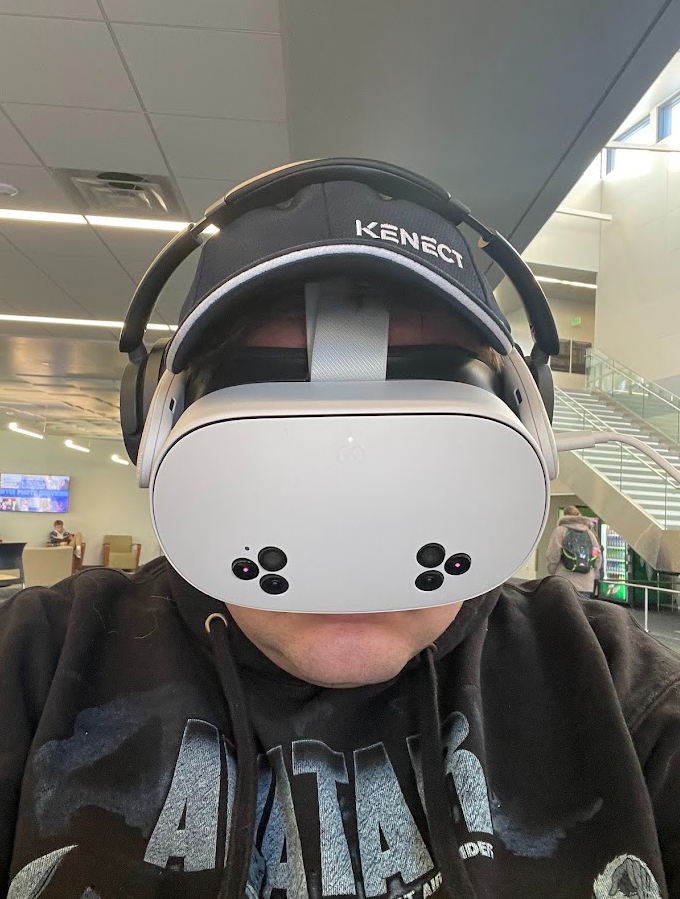
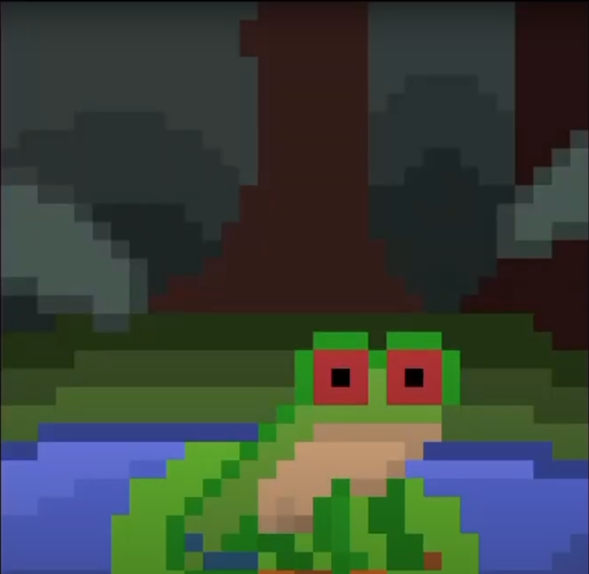

This is a list of projects I have worked on in class, and outside of class.
Frogge: This was a project I worked on for my second Hackathon sponsered by MLH. It won 3rd place in the category of strength and innovation. I helped coordinate team efforts, and designing the program.
Github Project Semantic_BookOfMormon: This was a personal project, where I would take the Book of Mormon and run it through an embedding ai model. This would then allow me to search for verses based off of the "gist" of a verse. Imagine being able to look for something in text without knowing any of the words in the verse. That's my goal with this program.
Github ProjectLigtnin_tapanin_game: This was my first ever Hackathon, where my team made a website with an embedded Godot game that would teach you morse code. I learned Godot script and my task was to make the actual morse code code in 24 hours. The website doesn't work, but the game sure does!
Github Project